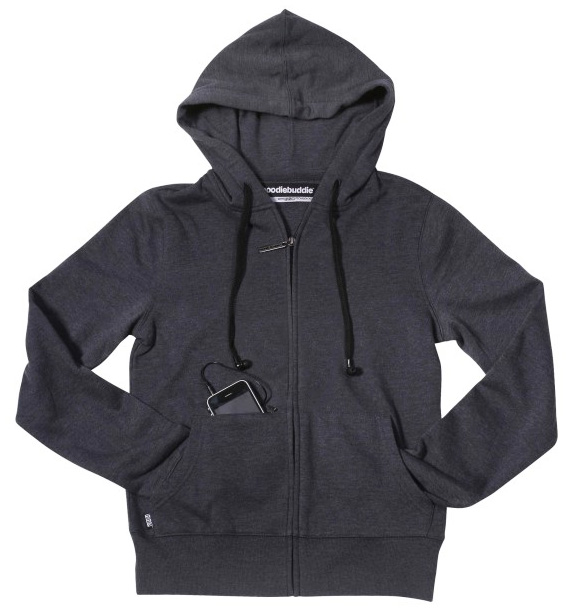

Blusa de frio com fone de ouvido:
A blusa de frio com fone de ouvido integrado é constituida basicamente de algodão e possui um acabamento que só a Expansion Tech pode fornecer.
Possuimos diversos tipos de fone de ouvidos, tanto para os aparelhos Androids quanto para os aparelhos com a tecnologia IOS.
As blusas custam a partir de R$ 250,00 (android) e R$ 290,00 (IOS) e tem uma duração média de 3 anos.
 Arquivado em produtosfone de ouvido encapado:
Apesar da blusa ter uma duração de 3 anos, o fone de ouvido da Expansion possui cerca de 2 anos de duração. Portanto pode ser necessário uma troca.
O modelo android custa R$ 60,00 e o modelo IOS R$ 90,00. Arquivado em produtos